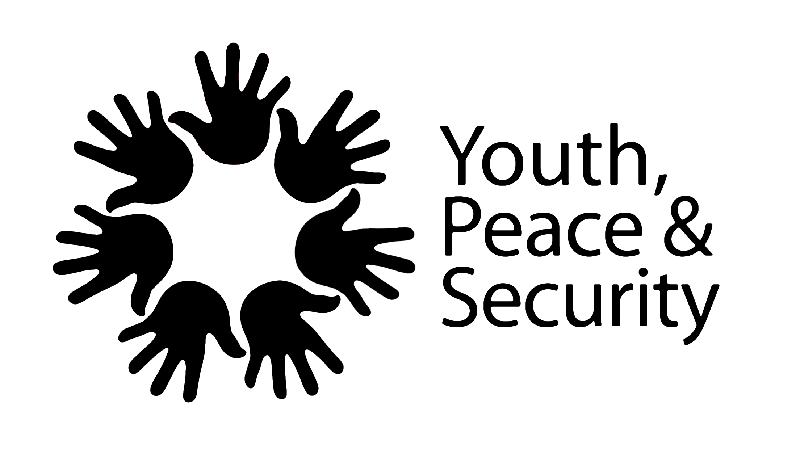

Youth, Peace & Security
Role: YPS Expert
Mandate: Practitioner of inclusive governance, international security, and youth-inclusive peace.

Alongside his leadership in Afghanistan, Yahya has been a prominent global voice for the Youth, Peace & Security (YPS) agenda. Drawing on field experience in conflict zones, he has helped connect the realities young people face to international policy — informing decisions at the United Nations, the European Union, the U.S. government, and major NGOs.
He served on the Steering Group for the five-year global strategy on youth-inclusive peace processes, alongside 36 members from mediation units, youth leaders, global peacebuilding NGOs, multilateral bodies, and representatives of the African Union, European External Action Service (EEAS), United Network of Young Peacebuilders (UNOY), Search for Common Ground (SFCG), InterPeace, UN Department of Political and Peacebuilding Affairs (DPPA-PBSO), United Nations Development Programme (UNDP), United Nations Assistance Mission in Somalia (UNSOM), and UN Women. Together they co-authored "We Are in This Together," a landmark framework now used by governments and international institutions as a foundation for youth-inclusive peace policy.
Yahya has also championed the digital, physical, legal, and financial security of young peacebuilders; contributed to the Global Ceasefire Campaign; supported the launch of the YPS Fund Initiative to expand flexible funding for youth-led organizations; and represented Afghanistan in the Global Coalition on Youth, Peace & Security — a platform of UN agencies, international organizations, donors, and practitioners advancing the YPS agenda.
He spoke at the UN's High-Level Event marking the 5th Anniversary of Security Council Resolution 2250; addressed the opening of the 2022 Global Conference on Youth-Inclusive Peace Processes in Doha, alongside the UN Secretary-General, the foreign ministers of Qatar and Finland, and the First Lady of Colombia; and briefed congressional staff of the U.S. Congress ahead of the first-ever YPS Act (H.R. 6174).